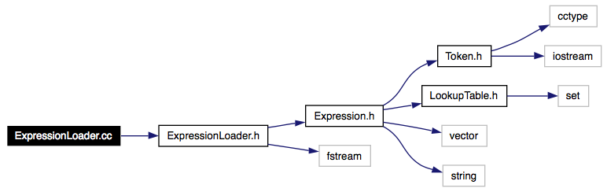

ExpressionLoader.cc File Reference
Code file for the ExpressionLoader class. More...
#include "ExpressionLoader.h"
Include dependency graph for ExpressionLoader.cc:

Go to the source code of this file.
Detailed Description
Code file for the ExpressionLoader class.
Definition in file ExpressionLoader.cc.
Generated on Tue Dec 20 11:59:37 2005 for Tautology Tester by
 1.4.4
1.4.4